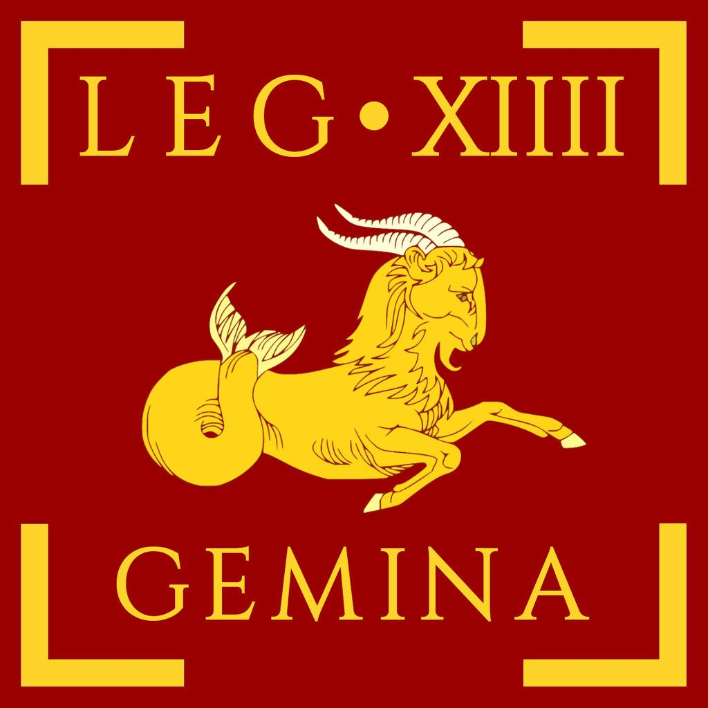
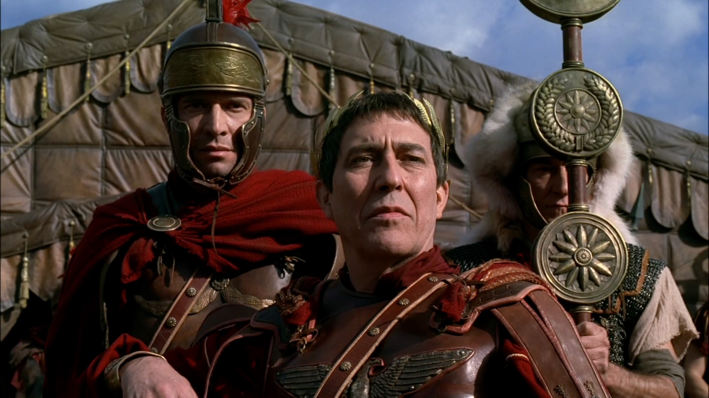

Proponowany artykuł: Legion XIX (XIIII) Gemina
Źródło: https://x-legio.com/enLegion XIV Gemina był znany ze swojej długiej historii, odznaczania się w wielu bitwach (m.in. podczas podbojów Wielkiej Brytanii) i lojalności wobec cesarzy, co potwierdzają wydarzenia z 193 roku, kiedy to legionici proklamowali nowego cesarza w Panonii. Jego przydomek "Gemina" ("Bliźniaczy") pochodzi od połączenia z innym legionem. Przeczytaj więcej na Wikipedii.
Kim był Juliusz Cezar?
Gajusz Juliusz Cezar, łac. Gaius Iulius Caesar (ur. 12 lipca 100 p.n.e. lub 13 lipca 102 p.n.e. (koncepcja Mommsena i Diona) w Rzymie, zm. 15 marca 44 p.n.e. tamże) – rzymski polityk, wódz, dyktator i pisarz.